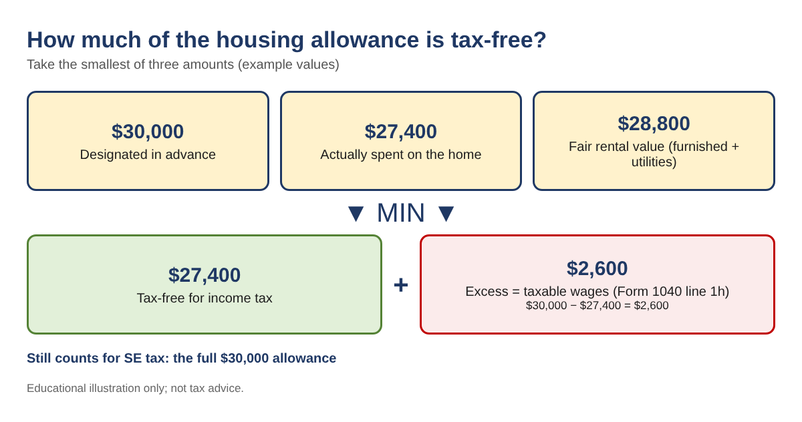
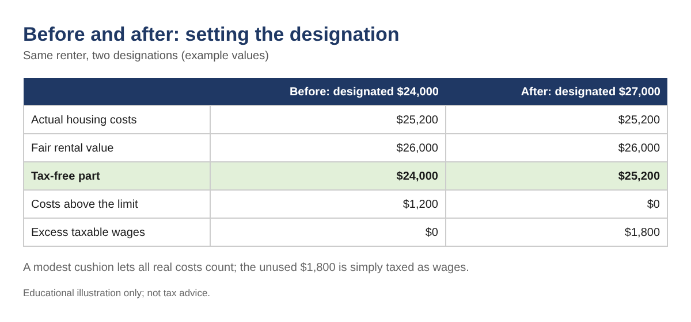
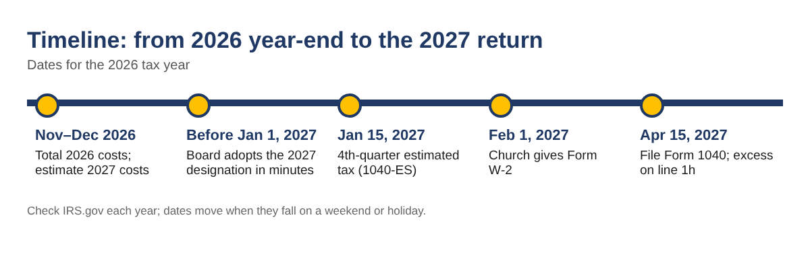

Every December, church treasurers and pastors face the same two questions. How much of this year's housing allowance is really tax-free? And what amount should the board designate for next year, before the first January paycheck? Getting either one wrong is common, and the fix is simple arithmetic once you know the rule. This guide walks through the rule, three worked examples, the self-employment tax that most people forget, and a year-end checklist you can follow with nothing more than a spreadsheet.
This article is for education only. It is not tax or legal advice, and every number below is an example. Federal rules only; state rules can differ. Confirm your own situation with a qualified tax professional.
This is for ministers who receive part of their pay as a housing allowance (also called a parsonage allowance or rental allowance), for ministers who live in a church-provided parsonage, and for the church treasurers and finance committees who set the allowance and prepare Form W-2. It matters because the allowance is often the largest single tax item in a minister's return, and a missing or badly sized designation can turn tax-free pay into taxable wages.
According to the IRS, if a minister receives an amount officially designated in advance of payment as a housing allowance, and total pay is not more than reasonable pay for the services, the minister can exclude from gross income the smallest of these three amounts:
Whatever was paid above that smallest amount is taxable. The IRS says to include it as wages on Form 1040, line 1h, writing "Excess allowance" and the amount on the dotted line next to that line. The allowance must also be used in the year it is received.

| Line | Amount |
|---|---|
| Designated and paid for 2026 | $30,000 |
| Actual housing costs (mortgage payments, utilities, insurance, property tax, repairs, furniture) | $27,400 |
| Fair rental value, furnished, plus utilities | $28,800 |
| Tax-free part (smallest) | $27,400 |
| Excess taxable wages (line 1h) | $2,600 |
Build a simple log with four columns: Date, Category, Paid to, Amount. Enter one row per payment. Costs that usually count include rent, mortgage payments (principal and interest), utilities, home insurance, property tax, HOA dues, repairs and upkeep, and furniture or appliances for the home. Costs that usually do not count include food, a cleaning service, a second home, and anything the church already paid directly.
If your log is in columns A to D with categories in column B and amounts in column D, these formulas give the totals:
=SUMIFS(D:D, B:B, F2)=SUM(D:D)=SUM(D:D)-SUM(G2:G10) should be 0, where G2:G10 hold the category totals.Fair rental value is what the home would rent for, furnished, with utilities. There is no IRS table, so use evidence. Find two or three similar homes for rent nearby, use the monthly rent for a furnished home (or add a fair amount for furniture), add average monthly utilities, and multiply by 12. Save the listings with your records. This number caps the allowance, so a designation far above it never becomes tax-free.
Put Designated in B1, Paid in B2, Actual costs in B3 and Fair rental value in B4. Then:
=MAX(0, MIN(B1, B2, B3, B4))=MAX(0, B2-B6)=MAX(0, B3-B6)Including "Paid" in the MIN matters when the church paid less than it designated: only money actually received can be excluded.
The board designated $24,000. Rent was $2,000 a month plus $1,200 of utilities, so actual costs were $25,200, and fair rental value was $26,000. The tax-free part is $24,000, the designation. The other $1,200 of real costs is simply not covered. Figure 2 shows what a slightly higher designation would have done.

The IRS is clear that a housing allowance is excludable for income tax purposes but not for self-employment tax purposes. For a church-provided parsonage, the rental value of the home is also included in net earnings for self-employment tax. Churches do not withhold Social Security and Medicare for ministers, so the minister pays it through SE tax on Schedule SE.
| Example A, 2026 (example values) | Amount |
|---|---|
| Church salary (W-2 box 1) | $48,000.00 |
| + Housing allowance paid | $30,000.00 |
| × 92.35% = net self-employment earnings | $72,033.00 |
| Social Security 12.4% (on earnings up to the $184,500 wage base) | $8,932.09 |
| Medicare 2.9% | $2,088.96 |
| Estimated SE tax | $11,021.05 |
Spreadsheet version, with net earnings in C1: =IF(C1<400, 0, ROUND(MIN(C1,184500)*12.4%,2) + ROUND(C1*2.9%,2)). This leaves out the extra 0.9% Medicare tax on high earners. Plan to pay it with quarterly Form 1040-ES payments, or ask the church to withhold extra federal income tax from each paycheck.
The church provides a home with a rental value of $21,600 and designates a $4,800 utilities allowance. Utilities actually cost $3,900. For income tax, the home's rental value is excluded, $3,900 of the allowance is tax-free, and $900 is excess. For SE tax, everything counts: $52,000 salary + $4,800 allowance + $21,600 rental value = $78,400, times 92.35% = $72,402.40, so estimated SE tax is about $11,077.57.
The designation has to be made in advance of payment by official action of the church, typically in board or council minutes or a written resolution. It cannot reach back to pay already made, and a change applies only to later payments. To size it, list next year's expected monthly costs, multiply by 12, add a modest cushion (10% is common for repairs), and compare the result with fair rental value. A designation slightly above real costs does no harm: the unused part is just taxed as wages.

It can designate in March for pay from that point on. Pay already made in January and February cannot be covered retroactively. Many churches word the resolution so it continues each year until changed.
Generally, yes, if the minister itemizes, even when those costs were paid with a tax-free allowance. Whether itemizing helps depends on the whole return, so ask a tax professional.
The designated allowance is not included in box 1 wages. Many churches show it in box 14 or in a separate letter so the minister has the number at tax time.
Use the amount actually paid in the test. You cannot exclude money you did not receive.
You can download the ready-made Minister Housing Allowance Planner (formulas, expense log, sample designation wording and checklist) for free in the Free kit download box below (Excel + PDF guide, no sign-up).
Disclaimer: this article is general education, not tax, legal or financial advice. Rules and figures change; check IRS.gov and talk to a qualified tax professional before acting.